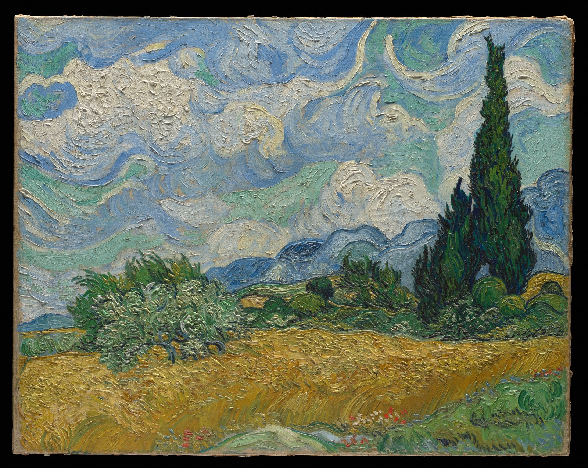

Follow the brushwork, from the restless sky to the dark vertical of a cypress.
This independent interface study uses the artwork's greens, grain and open sky to guide its colour and spacing. The text above is an original viewing prompt, not a museum quotation or a claim about a real exhibition.
Image and title/artist/date from The Met's Open Access collection, object 436535. The source marks this artwork public domain.
Vincent van Gogh · 1889 · The Metropolitan Museum of Art · Public domain. The complete image retains its canvas edges.